Projects
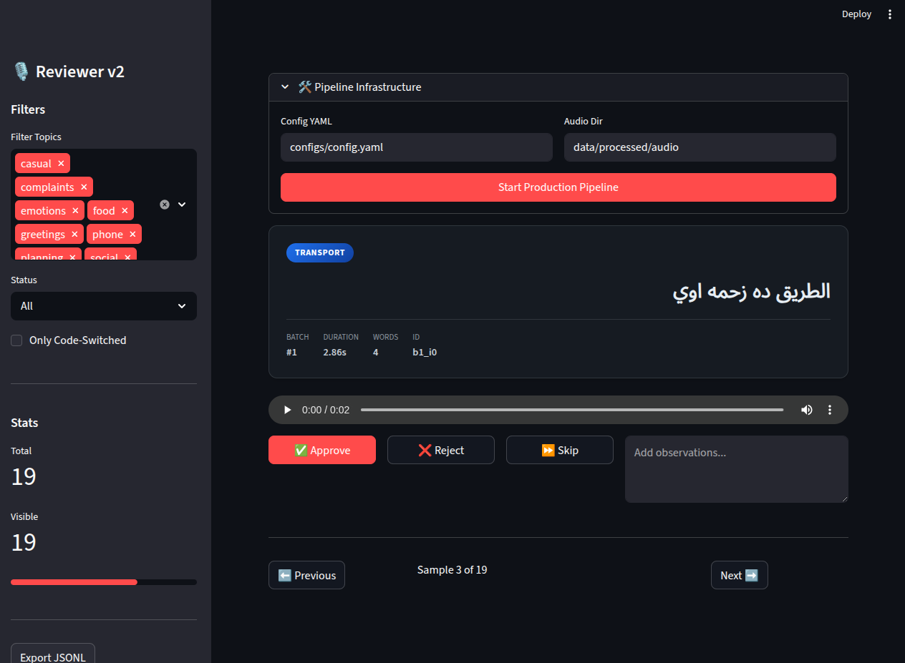
Synthetic Speech Data Pipeline
May 2026
A production-grade pipeline for generating, validating, and synthesizing high-quality Egyptian Arabic speech datasets for TTS model training.
Tech: Python, LLMs (Gemini/Groq), edge-tts, Streamlit
- Text Generation: Uses Gemini/Groq LLMs for conversational Egyptian Arabic text
- Dialect Refinement: AI-powered dialect validation and correction
- Audio Synthesis: edge-tts for natural-sounding speech generation
- Quality Validation: Automated audio quality checks and human review dashboard
- Streamlit Dashboard: Interactive review and dataset export interface
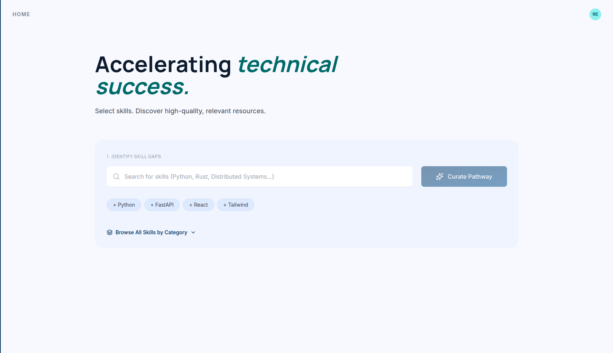
Graph-Based Learning Recommendation System
Mar 2026 – Apr 2026
Personalized learning path engine using graph algorithms and embedding-based ranking for skill-sequence generation.
Tech: Python, FastAPI, Embedding Models, Graph Algorithms
- Graph Algorithms: DFS and topological sorting for structured skill sequences from prerequisite graphs
- Embedding Ranking: Cosine similarity, skill weights, and content quality scoring for personalization
- Dynamic Pipeline: External content fetching and database expansion for up-to-date resources
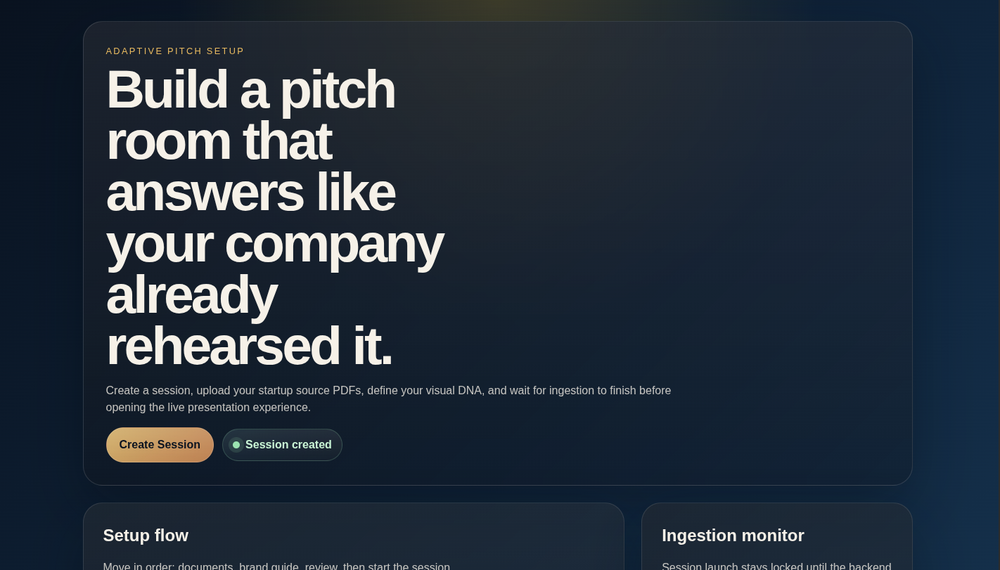
Presentation Agent
Mar 2026
AI-powered system that transforms static pitch decks into dynamic, interactive presentations using Gemini and RAG.
Tech: Python, LangChain, RAG, Gemini, React, TTS
- Interactive RAG: Ask questions and get dynamically generated slides and audio
- Brand Guide Support: Upload a PDF to align all generated content with your brand identity
- Deep Knowledge: Ingest technical PDFs into a Chroma vector store for grounded responses
- Multimodal Output: React slides, speaker notes, and TTS audio generation
SpeakOut — AI Content Moderation System
Dec 2025 – Present
Production-grade LLM-powered content moderation system with LoRA fine-tuning, ONNX quantization, and high-throughput batch inference.
Tech: Python, LLM (LoRA/QLoRA), ONNX, FastAPI
- LLM Fine-tuning: SFTTrainer with LoRA, 4-bit quantization and mixed precision (FP16/BF16)
- ONNX Inference: INT8-quantized local model for real-time user feedback (~0.13–0.15s/post)
- GPU Management: Cron-based scheduling with queue-driven activation to reduce idle compute
- Batch Processing: High-throughput pipeline handling up to 100 posts per batch
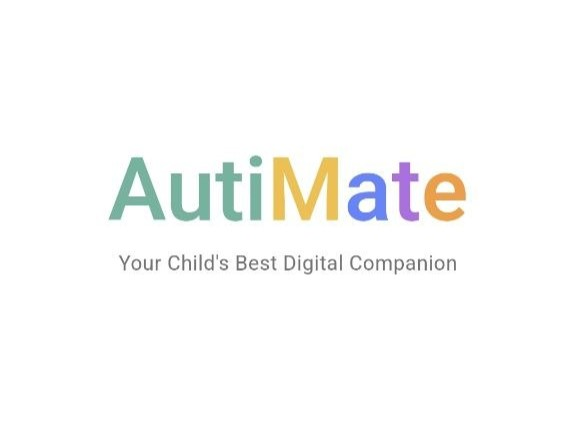
BrainLight — Autism Support Platform
Oct 2025
An AI-powered mobile platform for autistic children, featuring emotion detection, AR interactions, chatbot, and therapeutic games. Built with Flutter frontend and FastAPI backend with ONNX model inference.
- Emotion Detection: Real-time facial emotion recognition using Swin Transformer (ONNX)
- AR Interaction: Augmented reality activities for engaging therapy
- AI Chatbot: Conversational assistant for children and parents
- Therapeutic Games: Memory games, emotion games, and interactive levels
- Reports & Analytics: Track progress with detailed reports for therapists and doctors
- Bilingual: Full Arabic and English support
Tech Stack: Flutter, FastAPI, PostgreSQL, ONNX Runtime, Swin Transformer, Hugging Face
Live SiteAI Agent for Diabetes Diagnosis
Sep 2025
Medical AI agent built by fine-tuning LLaMA and BioGPT on a custom dataset, deployed via FastAPI and Gradio.
Tech: Python, LLaMA, BioGPT, FastAPI, Gradio
- Model Fine-tuning: LLaMA and BioGPT on a custom medical diabetes dataset
- Deployment: FastAPI backend with Gradio interface for interactive diagnosis
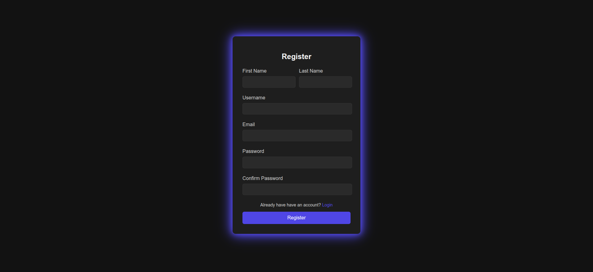
AI-Powered Resume Builder
Aug 2025
A full-stack resume builder application with AI-powered summary enhancement, PDF export, and dark theme UI. Built with React frontend and NestJS backend.
Tech: React, NestJS, TypeScript, JWT, Python
- User Authentication: JWT token-based auth with secure registration/login
- Resume Management: Create, edit, and manage multiple resumes with dynamic sections
- AI Enhancement: One-click AI-powered summary optimization
- Export Options: Export as PDF with professional design or JSON for portability
- Dark Theme UI: Modern responsive design with glowing box shadows and animations
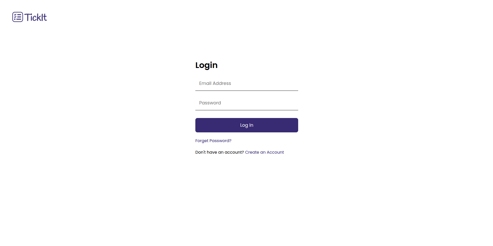
Spring-React Todo List
Aug 2025
A full-stack web application for managing personal tasks and to-dos. Built with Spring Boot backend and React frontend, featuring user authentication, task management, and filtering capabilities.
Tech: Spring Boot (Java), React (JavaScript), PostgreSQL
- User Authentication: Secure registration, login, and password reset functionality
- Task Management: Create, read, update, and delete tasks
- Task Filtering: Filter tasks by categories (All, Important, Work, Personal)
- Responsive Design: Clean and intuitive user interface
AI Virtual Keyboard
Aug 2025
A computer vision-powered virtual keyboard that lets you type using only hand gestures! No physical keyboard required – just point and "click" with your fingers in the air.
Tech: Python, OpenCV, MediaPipe
- Gesture-Based Typing: Type by pointing your index finger at virtual keys
- Air Clicking: "Click" keys by bringing your index and middle fingers together
- Real-Time Hand Tracking: Uses MediaPipe for accurate hand detection
- Audio Feedback: Satisfying click sounds for better user experience
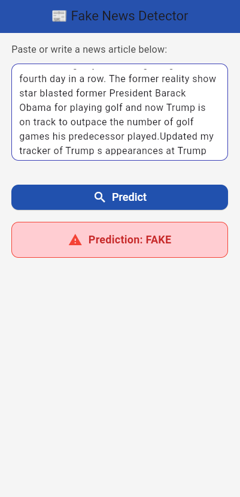
Fake News Classifier
Jul 2025
An end-to-end Fake News Detection System combining Machine Learning and Deep Learning techniques with a FastAPI backend and Flutter mobile frontend.
Tech: Python, FastAPI, Flutter (Dart), LSTM, TF-IDF
- Machine Learning: Logistic Regression with TF-IDF
- Deep Learning: LSTM with embedding and padding
- API: FastAPI backend serving prediction endpoints
- Mobile App: Flutter frontend with real-time prediction display
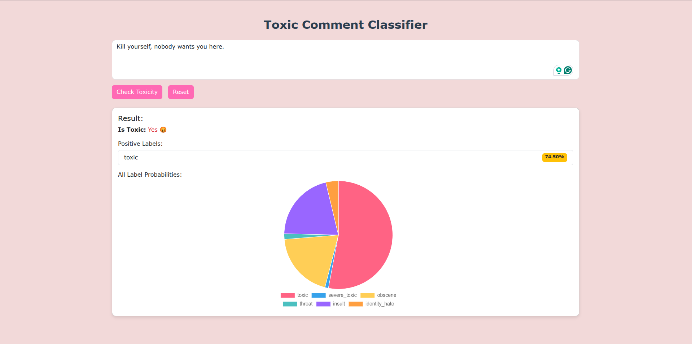
Toxic Comment Classifier
Jul 2025
A machine learning system for detecting toxic comments using LSTM neural networks with FastAPI backend and React frontend.
Tech: Python, FastAPI, React, LSTM, TensorFlow
- Multi-label Classification: Detects 6 types of toxicity (toxic, severe toxic, obscene, threat, insult, identity hate)
- REST API: FastAPI backend for real-time predictions
- Interactive Frontend: React web interface with visualization
- Batch Processing: Analyze multiple comments at once
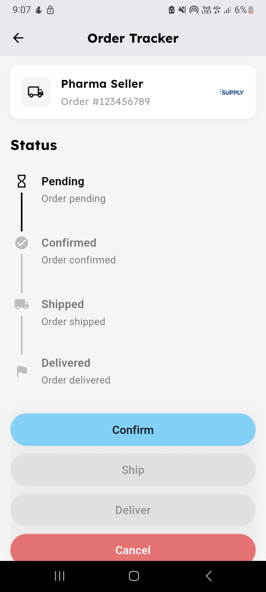
iSUPPLY Order Tracker App (Flutter + Firebase)
Jun 2025
Flutter-based order tracking system for iSUPPLY B2B pharmacy with real-time push notifications and a dynamic visual timeline.
Tech: Flutter, Firebase (FCM, Firestore), Provider, MVVM
- Real-time push notifications: Using Firebase Cloud Messaging (FCM)
- Visual progress timeline: Order updates with push notifications in all app states
- Firestore-backed: Real-time order sync and status management
- MVVM architecture: Clean code separation for maintainability
Movie Review Sentiment Analysis
Feb 2025
This project uses an LSTM model to predict whether a movie review is Positive or Negative, based on the IMDB 50K Dataset.
Tech: Python, LSTM, TensorFlow/Keras, IMDB Dataset
- Loads 50,000 movie reviews.
- Cleans and preprocesses the text.
- Visualizes the data using word clouds and plots.
- Trains a Bidirectional LSTM model.
- Evaluates the model's performance.
- Saves the model in .h5, .keras, and .tflite formats.
- Predicts sentiment for custom text inputs.

Android Learning App
Oct 2024
A simple Android app designed for children to learn colors and family members through interactive buttons. Each button plays a sound, enhancing the learning experience.
Tech: Java, Android SDK
- Interactive Buttons: Sounds related to colors and family members.
- Family Learning: Includes images and names.
- Modern Design: Edge-to-edge design for a contemporary look.

Mahatatty (محطتي)
Sep 2024
A cross-platform mobile application for train booking and ticket management in Egypt, providing users with a convenient and efficient way to search, book, and pay for train tickets.
Tech: Flutter (Dart), Firebase
- User Authentication: Secure sign-up/login with email or Google, password reset options, and session management.
- Flexible Booking: Supports one-way and round-trip bookings, including date selection, departure/arrival stations, and class choice.
- Real-time News & Offers: Features an updated news section with announcements,and best train offers.
- User-Friendly Interface: Dark/light mode options and an intuitive design enhance user experience, English and Arabic language options.
- Robust Architecture: Built using MVVM pattern and Clean Architecture principles, ensuring scalability and maintainability.

Flutter To-Do App
Sep 2024
Flutter-based To-Do app with splash screen, user authentication, and full task management (CRUD).
Tech: Flutter (Dart)
- Splash screen with smooth transition to login
- User authentication with signup, login, and validation
- Create, view, and delete tasks with persistent storage
- Terms & Services section and customizable light theme
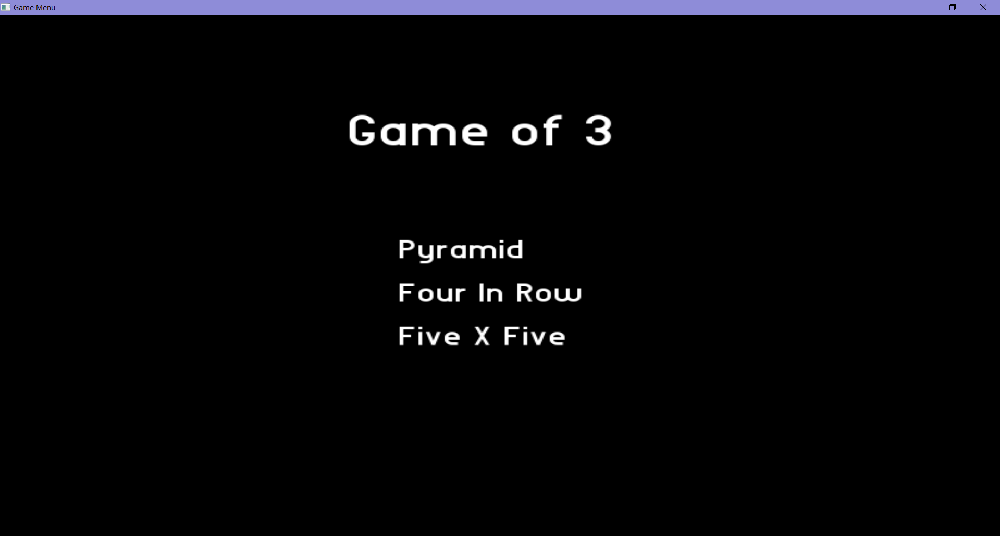
Desktop Application: Three Games
Jul 2024
Developed a desktop application featuring three games.
Tech: C++, OOP, GUI
- Game 1: Pyramic Tic-Tac-Toe
- Game 2: Four-in-a-Row
- Game 3: 5 x 5 Tic Tac Toe
- Utilized graphical user interface (GUI) for enhanced user interaction
- Developed in Visual Studio with C++ and Object-Oriented Programming (OOP) principles
Supermarket Online System
May 2024
Utilizes BST, Min/Max Heaps, and AVL Trees to allow users to store items online from a supermarket.
Tech: C++, Data Structures (BST, Heap, AVL)
- Allows users to add, remove, and display items sorted by name or price.
- Supports manual input or reading item data from a file.
- Implemented in C++.
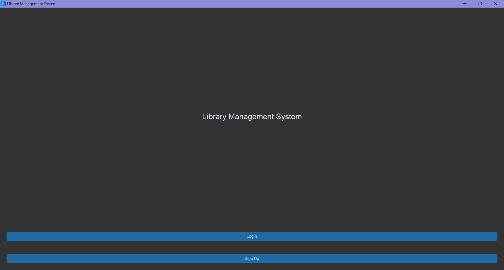
University Library Management System
May 2024
Developed a comprehensive desktop application to manage a university library using Microsoft SQL Server and Python. The system supports user registration, book borrowing/returning, and more.
Tech: Python, Microsoft SQL Server, GUI
- User Roles: Students and Admins with distinct permissions
- Admin Capabilities: Add, update, and manage books and orders
- Student Features: Search for books, borrow, return, and update personal details
- Database Management: Efficiently handles large volumes of data with Microsoft SQL Server
- Graphical User Interface: Intuitive and user-friendly interface developed with Python
Machine Simulator
Apr 2024
Developed a machine simulator using Object-Oriented Programming concepts and C++. Processes hexadecimal instructions.
Tech: C++, OOP
View Code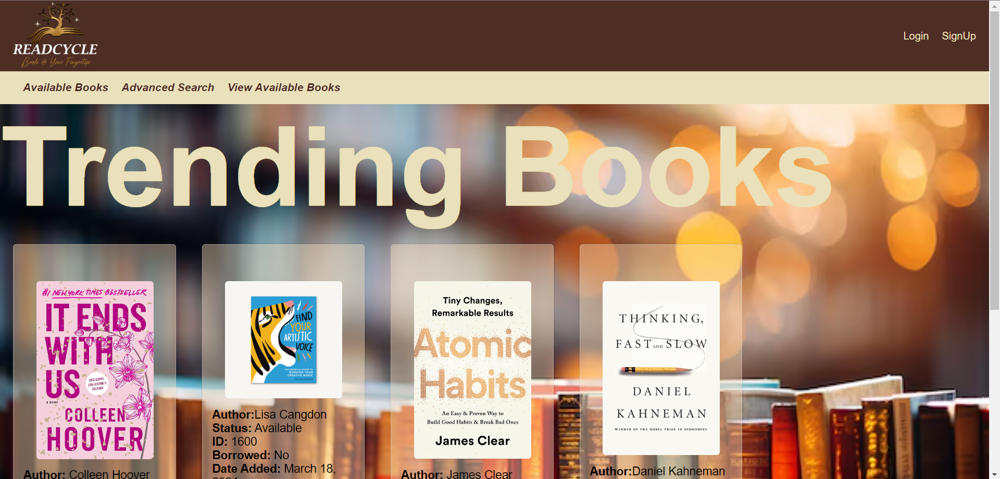
Online Library Website
Mar 2024
Developed an interactive online library that allows users to search for books, return, and borrow books in real-time. Built using HTML, CSS, JavaScript, Django, and AJAX for dynamic content updates.
Tech: HTML, CSS, JavaScript, Django, AJAX
- Real-time book borrowing/returning with AJAX
- User authentication and role management (Admin/User)
- Responsive design for optimal viewing on all devices